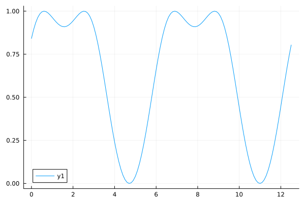
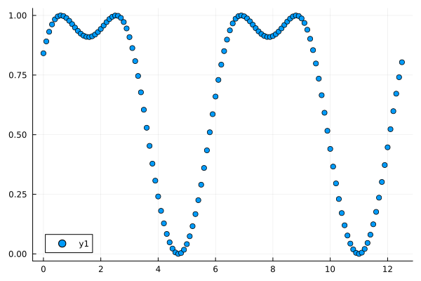
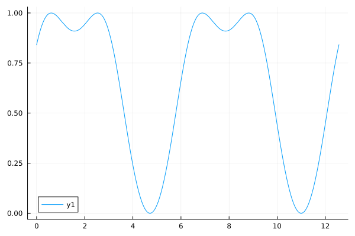
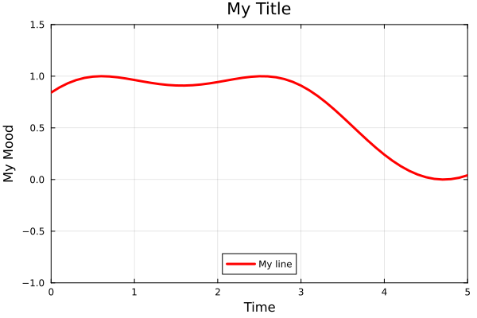
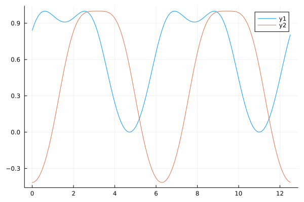
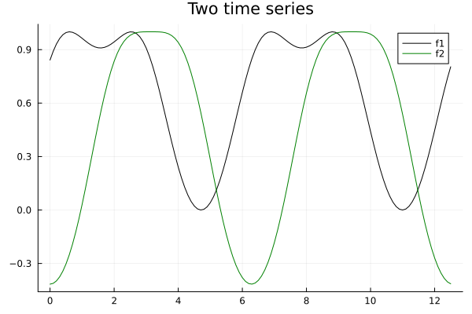
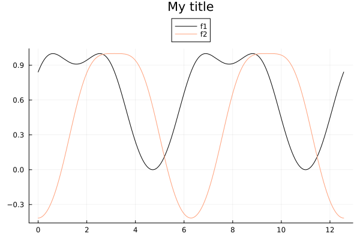
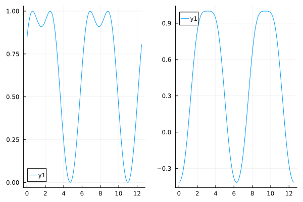
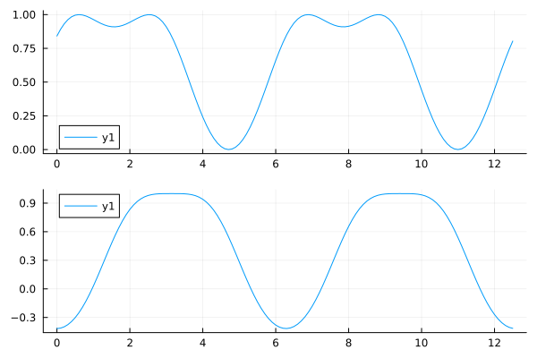
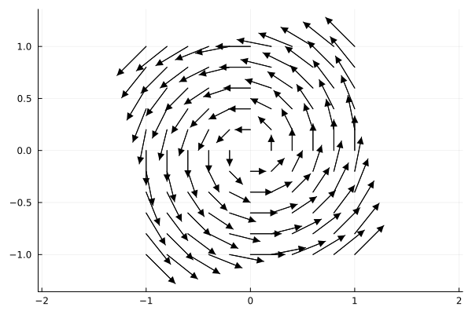

Plotting with Julia#
JuliaPlots/Plots.jl : powerful and convenient visualization with multiple backends. See also Plots.jl docs
JuliaPy/PythonPlot.jl :
matplotlibin Julia. See also matplotlib docsMakieOrg/Makie.jl : a data visualization ecosystem for the Julia programming language, with high performance and extensibility. See also Makie.jl docs
using Plots
Prepare data then plot
f(x) = sin(sin(x) + 1)
xs = 0.0:0.1:4pi
ys = f.(xs)
plot(xs, ys)

Line plots connect the data points
plot(xs, ys)
Scatter plots show the data points only
scatter(xs, ys)

you can trace functions directly
plot(f, xs)
Trace a function within a range
plot(f, 0.0, 4pi)

Customization example
plot(f, xs,
label="My line", legend=:bottom,
title="My Title", line=(:red, 3),
xlim = (0.0, 5.0), ylim = (-1.0, 1.5),
xlabel="Time", ylabel="My Mood", border=:box)

Multiple series: each row is one observation; each column is a variable.
f2(x) = cos(cos(x) + 1)
y2 = f2.(xs)
plot(xs, [ys y2])

Plotting two functions with customizations
plot(xs, [f, f2], label=["f1" "f2"], linecolor=[:black :green], title="Two time series")

Building the plot in multiple steps in the object-oriented way
xMin = 0.0
xMax = 4.0π
fig = plot(f, xMin, xMax, label="f1", lc=:black)
plot!(fig , f2, xMin, xMax, label="f2", lc=:lightsalmon)
plot!(fig, title = "My title", legend=:outertop)

Parametric plot
xₜ(t) = sin(t)
yₜ(t) = sin(2t)
plot(xₜ, yₜ, 0, 2π, leg=false, fill=(0,:orange))
Subplots
ax1 = plot(f, xs)
ax2 = plot(f2, xs)
plot(ax1, ax2)

Subplot layout
fig = plot(ax1, ax2, layout=(2, 1))

Vector field#
Plots.jl#
# Quiver plot
quiver(vec(x2d), vec(y2d), quiver=(vec(vx2d), vec(vy2d))
# Or if you have a gradient function ∇f(x,y) -> (vx, vy)
quiver(x2d, y2d, quiver=∇f)
PythonPlot.jl:#
using PythonPlot as plt
plt.quiver(X2d, Y2d, U2d, V2d)
See also: matplotlib: quiver plot
using Plots
∇ = \nabla <TAB>
function ∇f(x, y; scale=(x^2 + y^2)^0.25 * 3)
return [-y, x] ./ scale
end
∇f (generic function with 1 method)
x and y grid points
r = -1.0:0.2:1.0
xx = [x for y in r, x in r]
yy = [y for y in r, x in r]
11×11 Matrix{Float64}:
-1.0 -1.0 -1.0 -1.0 -1.0 -1.0 -1.0 -1.0 -1.0 -1.0 -1.0
-0.8 -0.8 -0.8 -0.8 -0.8 -0.8 -0.8 -0.8 -0.8 -0.8 -0.8
-0.6 -0.6 -0.6 -0.6 -0.6 -0.6 -0.6 -0.6 -0.6 -0.6 -0.6
-0.4 -0.4 -0.4 -0.4 -0.4 -0.4 -0.4 -0.4 -0.4 -0.4 -0.4
-0.2 -0.2 -0.2 -0.2 -0.2 -0.2 -0.2 -0.2 -0.2 -0.2 -0.2
0.0 0.0 0.0 0.0 0.0 0.0 0.0 0.0 0.0 0.0 0.0
0.2 0.2 0.2 0.2 0.2 0.2 0.2 0.2 0.2 0.2 0.2
0.4 0.4 0.4 0.4 0.4 0.4 0.4 0.4 0.4 0.4 0.4
0.6 0.6 0.6 0.6 0.6 0.6 0.6 0.6 0.6 0.6 0.6
0.8 0.8 0.8 0.8 0.8 0.8 0.8 0.8 0.8 0.8 0.8
1.0 1.0 1.0 1.0 1.0 1.0 1.0 1.0 1.0 1.0 1.0
Vector fields
quiver(xx, yy, quiver=∇f, aspect_ratio=:equal, line=(:black), arrow=(:closed))

Save figure#
savefig([fig_obj,] filename)
Save the current figure
savefig("vector-field.png")
"/home/github/actions-runner-1/_work/mmsb-bebi-5009/mmsb-bebi-5009/.cache/docs/vector-field.png"
Save the figure fig
savefig(fig, "subplots.png")
"/home/github/actions-runner-1/_work/mmsb-bebi-5009/mmsb-bebi-5009/.cache/docs/subplots.png"
This notebook was generated using Literate.jl.